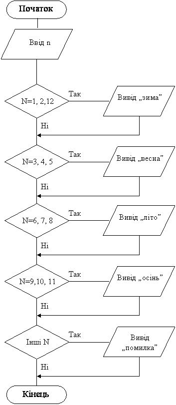
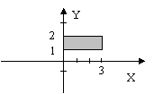

Назад
Зміст
Вперед
Задачі з неповним умовним оператором
Приклад 1
Дано номер місяця. Визначити пору року.
Дано: ціле додатне число, що є номером місяцю
Знайти: умови, при яких по цьому числу можна було б з’ясувати яка це пора року
(зима, весна, літо, осінь, чи це число не може бути номером місяця).
Змінні:
Вхідні:
Алгоритм
- Ввід числа n
- Розглянемо такі випадки:
- Зима, якщо n=12, 1, 2
- Весна, якщо 3<=n<=5
- Літо, якщо 6<=n<=8
- Осінь, якщо 9<=n<=11
- Помилка, якщо n<=0 або n>12
- Інших випадків бути не може, отже потрібно 5 неповних умовних операторів
Програма
Var n:byte;
begin
write('месяц '); read(n);
if (n=1)or(n=2)or(n=12) then writeln('зима');
if (n>=3)and(n<=5) then writeln('весна');
if (n>=6)and(n<=8) then writeln('лето');
if (n>=9)and(n<=11) then writeln('осень');
if (n>12)or(n=0) then writeln('ошибка');
end. |
Блок-схема програми

Приклад 2
Дано три різних цілих числа. Знайдіть добуток двох найменших з них.
Дано: три різних цілих числа
Знайти: найбільше число, а два інших числа перемножити та результат вивести на екран.
Змінні:
Вхідні:
- n1– перше число.
- n2– друге число.
- n3– третє число.
Вихідні:
- p– добуток двох найменших.
Алгоритм
- Ввід чисел n1, n2, n3.
- Знаходимо найбільше з трьох чисел. Це може бути:
- n1, якщо n1>n2 і n1>n3
- n2, якщо n2>n1 і n2>n3
- n3, якщо n3>n1 і n3>n2
- Інших випадків бути не може, отже потрібно 3 неповних умовних оператори, в
яких умова визначає найбільше число, а змінній p присвоюється добуток двох
інших чисел.
- Вивід значення p.
Програма
Var n1,n2,n3:integer;p:longint;
begin
write('введите 3 числа '); read(n1,n2,n3);
if (n1>n2)and(n1>n3) then p:=n2*n3;
if (n2>n1)and(n2>n3) then p:=n1*n3;
if (n3>n1)and(n3>n2) then p:=n2*n1;
writeln(p);
end. |
Варіанти задач
- Дано цифру. Надрукувати відповідну римську цифру.
- Надрукуйте номер чверті координатної площини, якій належить точка з координатами (x,y), при умові, що x<>0 та y<>0.
- Дано номер дня тижня. Виведіть на екран назву дня (1- понеділок,...).
- Дано кут. Визначте його тип (гострий, прямий, тупий, розгорнутий, більше розгорнутого).
- У чемпіонаті з футболу команді за виграш дається 3 очки, за програш –0, за нічию –1. Відома кількість очок, які отримала команда за гру. Виведіть на екран словесний результат гри: виграш, програш, нічия..
- Дано температура. Виведіть стан у якому знаходиться вода при цій температурі (льод, вода, пар).
- Дано номер місяця. Виведіть на екран кількість днів у цьому місяці (рік не високосний).
- Дано три дійсних числа. Піднести до квадрату тільки від’ємні.
- Дано 3 дійсних числа. Знайти серед них мінімальне та його порядковий номер.
- Дано чотири цілих числа. Відомо, що три з них рівні між собою, а четверте ні. Знайдіть порядковий номер цього числа.
- Дани три різних цілих числа. Знайдіть суму двох найбільших з них.
- Дани три різних цілих числа. Визначте, яке з них найбільше, найменше, середнє.
- Дано ціле число K (1<=k<=365). визначте, яким днем тижня (понеділком, вівторком, ...) є k–й день не високосного року, в якому 1 січня – понеділок.
- Дано дві трійки дійсних чисел. У кожній трійці всі числа різні. Знайдіть середнє арифметичне середніх чисел кожної трійки (середнім назвемо таке число в трійці, яке більше найменшого з чисел, але менше найбільшого).
- Дано точка M(x,y).Визначте де вона знаходиться: на прямокутнику, усередині або зовні його.
- Дано точка M(x,y).Визначте де вона знаходиться: на прямокутнику, усередині або зовні його.

- Знайти взаємне розташування на числовій прямій відрізків [a, b] і [c, d] (перетинаються, співпадають, не перетинаються, торкаються). На малюнку випадок – перетинаються.
Назад
Зміст
Вперед